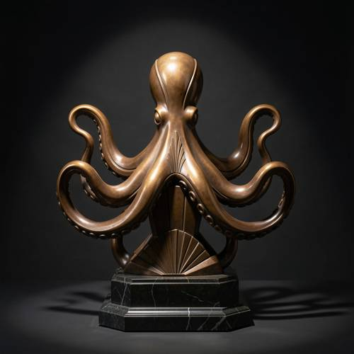
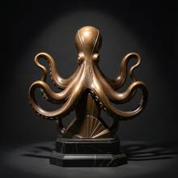

Action — Generated image: An Art Deco bronze sculpture depicting an octopus gra
Generated image: An Art Deco bronze sculpture depicting an octopus gracefully stretching its tentacles.


Judge — Direct
- PASSAction - State — The image displays a sculpture of an octopus with its tentacles extended outwards and upwards. The tentacles are arranged in various curved and unfurled positions, consistent with the action of stretching.
- PASSWorld Knowledge — The image shows a three-dimensional object that is clearly a sculpture. The material has a metallic sheen, and a brown and dark patina, which are characteristic of a bronze sculpture. It is mounted on a circular base, typical for sculptures.
- FAILStyle — The sculpture depicts the octopus in a naturalistic and realistic manner. It lacks the typical characteristics of the Art Deco style, such as strong geometric shapes, stylized forms, symmetry, and streamlined lines. The style is more focused on realistic anatomical representation.
Judge — Continuum
- PASSAction - State — The sculpture depicts an octopus with its tentacles unfurled and extended outwards and upwards from its body, in a posture that represents the state of stretching.
- PASSWorld Knowledge — The image shows a three-dimensional sculpture of an octopus. The material of the main figure has a metallic sheen and a brownish-gold color, consistent with the appearance of bronze. The sculpture is mounted on a stone base.
- PASSStyle — The sculpture's design is heavily influenced by the Art Deco style, featuring stylized forms, strong symmetry, and geometric patterns, such as the radiating, fan-like shapes at the base of the octopus's body. The octagonal shape of the marble plinth also aligns with this aesthetic.
What the agent did
Thinking
The task: generate an image matching the prompt "An Art Deco bronze sculpture depicting an octopus gracefully stretching its tentacles." Use flux2-klein. Generate, inspect, edit as needed.
Step 1 — `generate_image`
{
"prompt": "An Art Deco bronze sculpture of an octopus, elegantly stretching its flowing tentacles in graceful curved arcs. Streamlined 1920s Art Deco styling: sleek geometric forms, stylized symmetrical curves, stepped and fan-shaped motifs integrated into the body. Rich warm bronze patina with polished highlights on a dark stepped marble pedestal. Dramatic museum spotlighting against a dark background, shallow depth of field, high-detail fine art photograph.",
"model": "flux2-klein"
}Result img_0

Thinking
The first result is quite good: Art Deco octopus, bronze, fan motif on pedestal, tentacles elegantly curved, dark background spotlight. Check details: tentacles look symmetric, graceful. Art Deco styling is present (fan motif, streamlined body). Bronze patina looks good. Composition fits. This satisfies the prompt. Mark best. Maybe check for any weirdness — the tentacle tips look fine, eyes are stylized. It's good enough — stop.
Step 2 — `mark_best`
{
"image": "img_0",
"reason": "Matches the prompt fully: bronze octopus sculpture with clearly Art Deco styling (fan motif, streamlined symmetric forms, stepped dark marble base), graceful sweeping tentacles, warm patina, dramatic spotlight. No errors or missing elements to fix."
}Thinking
The image matches the prompt well. Stop and report.
Model
The image is done and marked as the final result. It delivers everything the prompt asks for: - **Art Deco styling**: a classic fan/sunburst motif on the pedestal, sleek streamlined body, symmetrical stylized curves, and a stepped dark marble base — all hallmarks of 1920s Deco design. - **Bronze material**: warm patinated bronze with polished highlights catching the spotlight. - **Octopus gracefully stretching its tentacles**: eight flowing tentacles sweep outward in elegant, ribbon-like arcs. - **Presentation**: museum-style dramatic spotlighting against a dark backdrop, giving it the feel of a fine art photograph. No flaws needed correction, so the first generation stands as the best result.